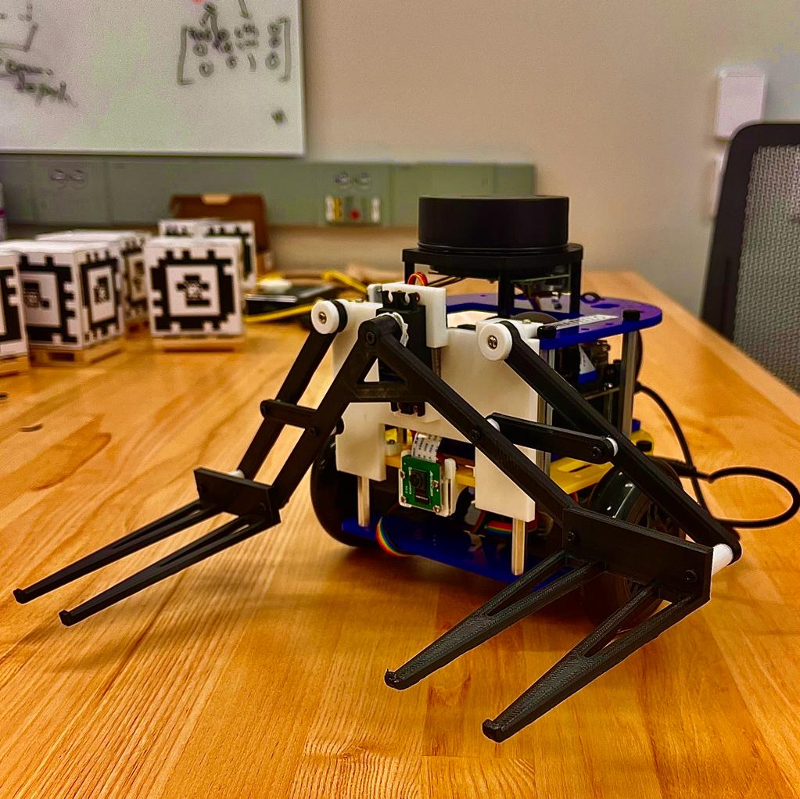
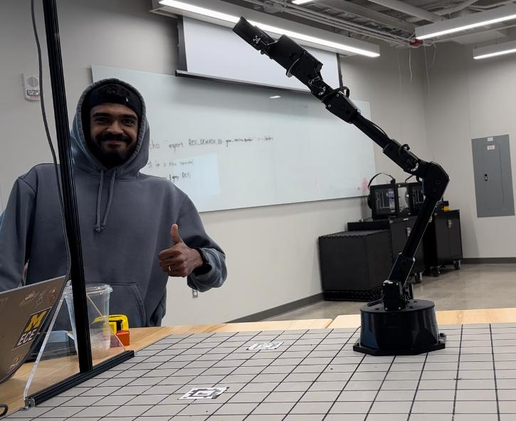
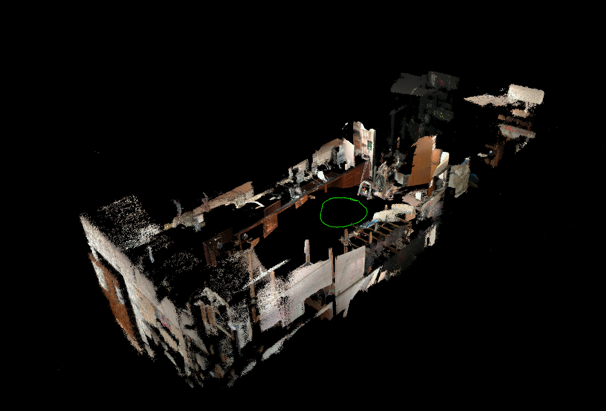
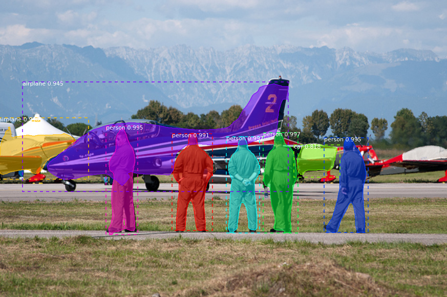
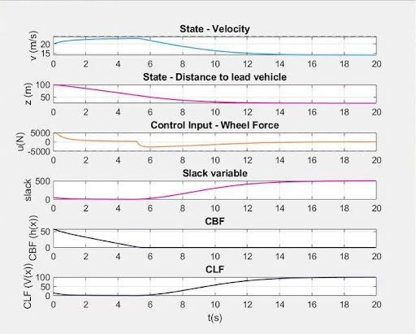
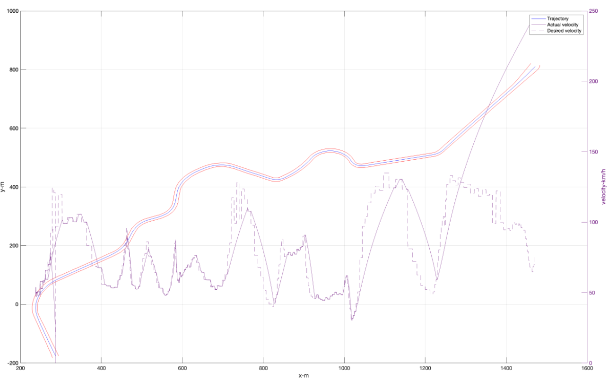

My Projects
* Hover over the images to view more details about the projects

Warehouse robot
Navigation, Controls, SLAM, Planning
- The warehouse robot is two wheeled diffrential drive robot based on the Mbot platform, that it equipped with a 2D RP Lidar, an RGB camera, wheel encoders and IMU's, it was desgined to autonomously localize, navigate and explore around an unknown space with the goal of pick and placing blocks.
- The project focuses on using various sensors processed through a SLAM implementation (AMCL/Particle-filter for localization and a 2D Occupancy - Grid based mapping framework) to map and navigate new spaces autonomously with the 2 Wheeled differential-drive MBot. the motion controller was designed using a KalmanFilter-based PID controller to maintain precise odom etry and wheel velocity
- Deployed a 2D frontier exploration system, that enabled to robot to explore an unknown space autonomosly.
- implemented an A* algorithm to plan the path of the robot. Much of what was was used are basic functionalities that are utilized at a more complex level in more complicated robotics.
- We also designed from scratch a unique gripper design to manipulate warehouse style cubes. The camera was used to detect Apriltags to determine the orientation of the cubes.

PrecisionStack: 5DOF Robotic Arm for Object Manipulation.
Perception, Planning and Robot Kinematics
- Spearheaded the development of a 5DOF robotics arm using the Interbotix RX200 robot, integrating an Intel RealSense L515 camera in a checkered, marker-laden workspace to showcase precise, intelligent manipulation capabilities.
- Project harnessed advanced image processing and computer vision techniques to accurately identify and track wooden blocks. The implemented block detection and tracking algorithm showcased the ability to handle real-time image data, effectively differentiating and monitoring the position and orientation of multiple blocks, highlighting the system's adeptness in scene understanding and dynamic object tracking.
- The project featured an Forward Kinematics (FK) and Inverse Kinematics (IK) framework. The FK was used to determine the end-effector's position based on robot joint angles, while the IK solution was instrumental in calculating these angles to achieve the desired position of the end-effector.
- This sophisticated kinematic framework was intricately tied to the trajectory and motion planning of the robotic arm, enabling it to execute complex tasks like stacking and sorting with high precision and efficiency, illustrating a seamless blend of theoretical robotics principles and practical implementation.

3D Lidar SLAM for Dandelion picking legged robot
Perception, Navigation, SLAM, Computer vision
- The Dandelion Picking BigAnt's SLAM system excels in complex environmental mapping and navigation, integrating advanced feature extraction and robust optimization techniques.
- It begins with a precise differentiation of point cloud data into edges and surfaces, essential for understanding the environment's intricate details. The system's core strength lies in its efficient data processing, utilizing KD-Trees for rapid alignment of new data with the existing map.
- Central to its operation is the Ceres Solver, an optimization framework that iteratively refines the BigAnt's pose to ensure accurate alignment with the environmental model. This process, underpinned by the system's ability to continually update the local map with transformed sensor data, maintains a dynamic and detailed environmental representation.
- Global map optimization is a standout feature, with pose graph optimization being critical for trajectory accuracy. Triggered by innovative AprilTag-based loop closure detection, this process employs the Levenberg-Marquardt algorithm to reconcile odometry and environmental data, enhancing the BigAnt's navigational precision. Geometric consistency verification is integral to this phase, ensuring new data's alignment with the map, further solidifying the system's reliability.

Pushing Dynamics model for robot planning and control
Planning, Predictive Control, Machine Learning
- Implemented a pushing dynamic model to train a robot that was simulated using Pybullet to push an object to a goal pose. A residual dynamics model is implemented that predicts the next state given the current state and action. This is a neural network that maps from the concatenation of the state and action vectors to the state difference vector.
- This implementation defines a fully connected neural network with three layers, where the first two layers have ReLU activation functions and the last layer is linear. The output of the last layer is added to the input state to obtain the predicted next state. The network takes as input the concatenation of the state and action tensors.
- SE2poseloss was used as the loss function to predict the pose of the block after taking an action. The SE2PoseLoss is defined as a class inheriting from nn.Module, and it takes as input the predicted and target poses, and computes the mean squared error loss between the two poses. The purpose of using the SE2PoseLoss is to train the dynamics model to predict the pose of the block after taking an action. The aim is to minimize the difference between the predicted and target poses, which will allow the robot to push the block more accurately towards the goal configuration.

Shakespear GPT
Deep-Learning, Large Language Model, Transformers
- In my project "ShakespeareGPT," I embarked on the fascinating journey of constructing a language model capable of generating Shakespearean-style text. Drawing inspiration from Andrej Karpathy's tutorial, this venture was rooted in the tiny-Shakespeare dataset, slightly modified to align with the model's learning process.
- Project's essence was to create a Generative Pretrained Transformer (GPT) model from scratch, leveraging the power of neural network architectures and deep learning. At its core, the model used an advanced mechanism to process and understand the nuances of Shakespeare's language, learning from the dataset to replicate his unique writing style.
- To ensure the model's effectiveness, I experimented with different approaches to text processing. This included training variations of the model using character-level analysis and byte-pair encoding methods, allowing me to observe how varying linguistic granularities influenced the generated text.
- ShakespeareGPT" stands out as a blend of literary art and cutting-edge technology. It’s a project that pushed the boundaries of natural language processing, showcasing how AI can not only mimic the linguistic style of one of history's greatest playwrights but also create new, original compositions in his signature style. This venture was not just a technical accomplishment but also a creative exploration into how AI can be used to continue the legacy of literary giants.

Mask R-CNN Backbone and Optimization
Deep-Learning, Perception
- Improvised an in-depth implementation and assessment of the Mask R-CNN model utilizing Pytorch’s mask R-CNN and object detection framework for image instance segmentation.
- Trained, and tested the Mask R-CNN model on various balanced and diverse data-sets, including the COCO data-set, to assess its performance in terms of accuracy, speed, and adaptability.
- Explored various backbone architecture implementations, such as ResNet50 with a Feature Pyramid Network, MobileNetV2, VGG16, and AlexNet, in combination with different optimizers, to improve the model’s performance

Smart Adaptive Cruise Control
ADAS, Adaptive Control, Safety Critical Systems
- Designed a simple adaptive cruise control system. for which a CLF-CBF-QP controller was formulated and implemented in MATLAB
- Here CLF is formulated to act as a soft constraint to handle adaptive speed regulation that follows a user-set speed when there is no vehicle ahead in the lane. and CBF is enforced as a safety critical constraint when there is a vehicle ahead, and the speed needs to be adaptively reduced to maintain a fixed time-headway based follow distance.

Advanced Control Systems for Autonomous Racing: Navigating the Unknown Obstacles
Control Systems, Autonomous Naviagtion
- Designed a sophisticated controller for a self-driving car navigating a predefined racetrack with unpredictable obstacles. Initially, explored trajectory optimization using Model Predictive Control (MPC), drawing on techniques from previous coursework. Despite numerous iterations, this approach achieved only partial track completion without obstacles and suffered from slow response times.
- We then experimented with the Linear Quadratic Regulator (LQR) method, but it too fell short of our expectations.
- The breakthrough came with the implementation of a Proportional-Integral-Derivative (PID) controller, augmented by the Stanley algorithm for efficient track following and a novel lane-switching method to circumvent obstacles. This strategy not only met but exceeded our project requirements, allowing us to complete the full track with obstacles in a commendable time of seven minutes.